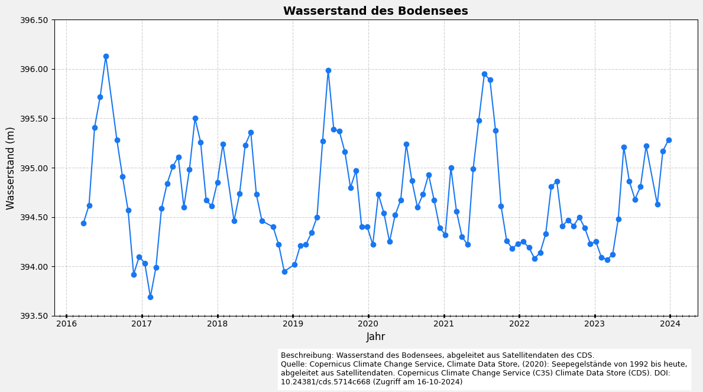

Liniendiagramm
Dieses Notizbuch zeigt, wie man ein einfaches Liniendiagramm mit Pythons matplotlib erstellt. Wir beginnen mit Beispieldaten und zeigen Ihnen dann, wie Sie Ihren eigenen Datensatz laden und visualisieren können.
1. Grundlegendes Liniendiagramm
# Schritt 1: Python Libraries importieren
import matplotlib.pyplot as plt
import numpy as np
# Schritt 2: Beispieldaten erstellen
x = np.linspace(0, 23, 2*24)
np.random.seed(42)
noise = np.random.uniform(-1, 1.5, size=x.shape)
y = 20 + 8 * np.sin((x - 9) * np.pi / 12) + noise
# Schritt 3: Plotten des grundlegenden Liniendiagramms
plt.figure(figsize=(8, 4))
plt.plot(x, y, label='sin(x)', color='blue', linewidth=2)
plt.title('Basic Line Graph')
plt.xlabel('X-axis')
plt.ylabel('Y-axis')
plt.ylim(10,30)
plt.grid(True)
plt.show()
2. Liniendiagramm mit CDS-Datensatz
import pandas as pd
import matplotlib.pyplot as plt
from matplotlib.dates import DateFormatter, YearLocator, MonthLocator
import matplotlib.ticker as ticker
# Lese die CSV-Datei mit Datums-Parsing
csv_filepath = f"./data/satellite-lake-water-level.csv"
dataframe = pd.read_csv(csv_filepath, parse_dates=['time'], index_col='time')
# Erstelle die Figur und Achsen
fig, ax = plt.subplots(figsize=(12, 6), facecolor='#f1f1f1', edgecolor='k')
# Plotten der Wasserstandsdaten
ax.plot(
dataframe.index,
dataframe['water_surface_height_above_reference_datum'],
marker='o',
linestyle='-',
color='#1877F2',
label="Wasserstand",
)
# Formatieren der x-Achse für bessere Lesbarkeit
ax.xaxis.set_major_locator(YearLocator()) # Haupt-Ticks für jedes Jahr
ax.xaxis.set_minor_locator(MonthLocator()) # Kleine Ticks für jeden Monat
ax.xaxis.set_major_formatter(DateFormatter('%Y'))
ax.tick_params(axis='x', which='major', length=4, direction='inout', width=2)
ax.tick_params(axis='x', which='minor', length=3, direction='inout')
# Setzen der y-Achsen-Grenzen
ax.set_ylim(393.5, 396.5)
# Setzen der Achsenbeschriftungen und Titel des Diagramms
ax.set_xlabel('Jahr', fontsize=12)
ax.set_ylabel('Wasserstand (m)', fontsize=12)
ax.set_title('Wasserstand des Bodensees', fontsize=14, fontweight='bold')
# Hinzufügen eines Rasters zum Diagramm und Formatierung der y-Achse
ax.grid(visible=True, color='#b0b0b0', linestyle='--', linewidth=0.8, alpha=0.6)
ax.yaxis.set_major_formatter(ticker.FormatStrFormatter('%0.2f'))
# Hinzufügen einer Beschreibung und Quelleninformation
plt.figtext(
0.4,
-0.05,
(
'Beschreibung: Wasserstand des Bodensees, abgeleitet aus Satellitendaten des CDS.\n'
'Quelle: Copernicus Climate Change Service, Climate Data Store, (2020): Seepegelstände von 1992 '
'bis heute, abgeleitet aus Satellitendaten. Copernicus Climate Change Service (C3S) Climate Data '
'Store (CDS). DOI: 10.24381/cds.5714c668 (Zugriff am 16-10-2024)'
),
ha='left',
va='center',
fontsize=9,
wrap=True,
backgroundcolor='w',
)
# Layout anpassen und das Diagramm anzeigen
plt.tight_layout()
plt.show()
